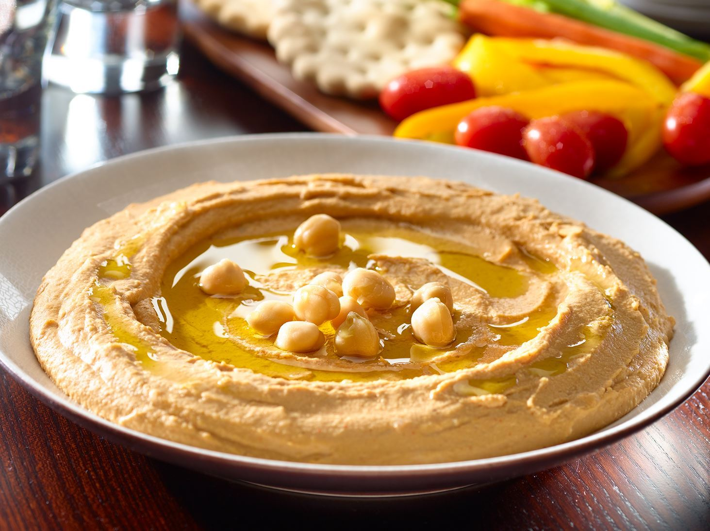

Hummus Recipe

Hummus is a Middle Eastern dip, spread, or savory dish made from cooked, mashed chickpeas blended with tahini, lemon juice, and garlic.
This creamy, rich vegan hummus is made using just five ingredients and is ready in 10 minutes. Serve with crunchy seasonal veg or warm pitta breads.
Ingredients
- 1 can chickpeas, drained
- 60ml cold water, plus a 30ml for a looser consistency
- 1 small garlic clove peeled and crushed
- 1 lemon, juiced then ½ zested
- 3 tbsp tahini
- 1 tbsp olive oil, to garnish (optional)
- mixed crudités and toasted pitta bread, to serve (optional)
Steps
- Thoroughly rinse the chickpeas in a colander under cold running water. Tip into the large bowl of a food processor along with 60ml of water and blitz until almost smooth.
- Add the garlic, lemon and tahini, and blitz again. If the consistency is too thick, gradually pour in up to 30ml more water. Blitz again for about 5 mins, or until the hummus is smooth and silky.
- Season with a good pinch of sea salt and transfer to a bowl. Swirl the top of the hummus with the back of a dessert spoon and drizzle over a little olive oil. Serve with crunchy crudités and toasted pitta bread, if you like.